pullback と 完全写像
—Describing perfect maps with pullback—
1 pullback
可換図式の説明は省略する．
位相空間と 写像 と を考える．
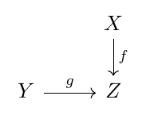 |
このとき 位相空間と二つの写像 と が上の図式に対する pullback であるとは以下の図式が可換であり
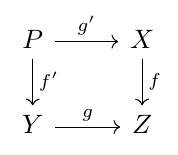 |
尚且つ図式を果敢にする他の , , が与えられた時に 以下の図式を可換にするが一意的に存在するときにいう．
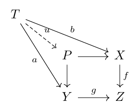 |
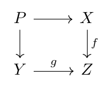 |
がpullbackであることを示すために以下のように直角記号を書く．
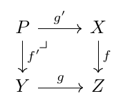 |
またをbase changeなどと言ったりする．
pullbackを や と書いたりする．
以上の定義からpullbackは存在するならば同型を除いて一意的であることがわかる． 今から位相空間のpullbackに関する幾つかの基本事項を確認しよう．
定理 1.
位相空間の圏において，pullbackは常に存在する．つまり上で述べた状況において，pullback は常に存在する． さらにpullbackの具体的表示としてで，とは射影であるように取れる．
証明.
具体的に表示を与えているので可換性と普遍性を調べるだけである．せかせか手を動かせばわかる． ∎
位相空間のpullbackは上記のように具体的に書けるのだが， 特殊な状況においてそれが何と同一視できるのかが大事だと思われる．
命題 2.
以下の命題群が成り立つ．
-
(A1)
以下の図式において はpullbackになっている． つまり，写像 に対して，一点を考えたとき， のbase changeは一般化ファイバー になっている．
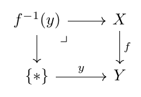
-
(A2)
連続写像 と位相空間について以下の図式はpullbackである．
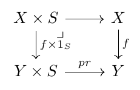
連続写像との部分集合について以下の図式はpullbackである．ここで は包含写像である．
-
(A3)
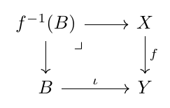
-
(A4)
連続写像 について以下の自明なpullback図式が成り立つ．
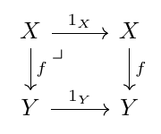
-
(A5)
以下の図式がpullbackとする．
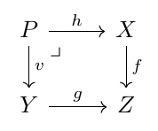
このとき任意の位相空間について 以下の図式もpullbackとなる．
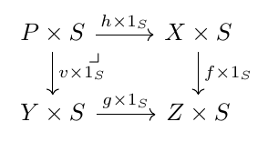
証明.
(A1)の証明: 上の状況で なので，と は同相になる．
(A2)の証明: 普遍性をせかせか計算するとわかる．
(A3) の証明: である． を と定義する． を と定義する． これらは互いに逆写像になっているので と が同相であることがわかる．
(A4)の証明: 普遍性を計算するとわかる．
(A5)の証明： 普遍性をせかせか計算するとわかる．
一般にpullbackと極限は交換する．特にpullbackと直積は交換するので，二つのpullhack図式を直積するとpullbackになる．
ここら辺で証明を終わろう． ∎
pullback同士を連結させてもpullbackになる．
定理 3.
以下の可換図式の状況を考える．
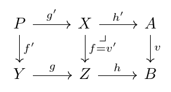 |
つまり右側の図式においてはとの上のpullbackとする． このときが左側の図式のpullbackになっていることと， は一番外側の大きい図式のpullbackになっていること つまり
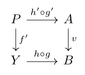 |
がpullback図式になっていることは同値である．
証明.
まずが小さい図式のpullbackになっているとする. 大きい図式の 普遍性を示すために位相空間から 図式が可換になるような連続写像 と が伸びてるとする．
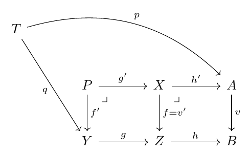 |
すると と は と からなる図式を可換にする．
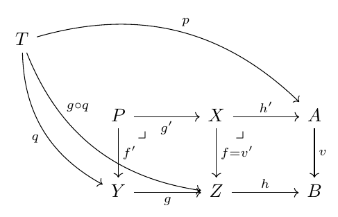 |
よってがpullbackであることから一意的に写像 が存在して図式を可換にする．
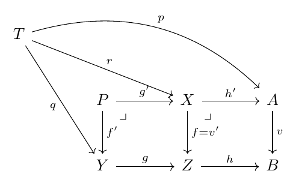 |
そしてと に対しての普遍性を用いて一意的な写像 を得る．
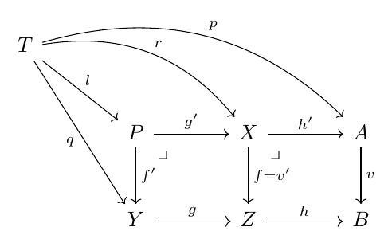 |
以上の図式は全て可換なので以下の図式も可換になる．
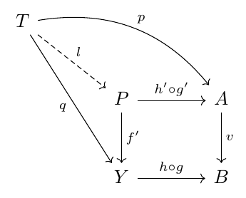 |
一意性もやの一意性からわかる(なぜか?)． 以上からがであることがわかった． 逆を示すのは省略する．今やった操作を逆に辿ればきっとできるよ． ∎
図式を縦にすることで以下のこともわかる．
定理 4.
以下の可換図式の状況を考える．
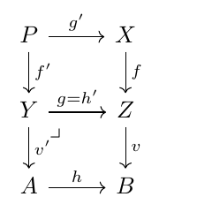 |
このときが小さい四角のpullbackになっていることと一番外側の大きい図式のpullbackになっていることは同値である．
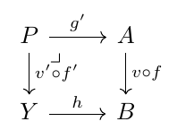 |
2 完全写像
まず最初に埋め込みのbase changeは埋め込みなることを説明する．
命題 5.
以下のpullback図式を考える．
このときが埋め込みならばもそうである． さらにが閉埋め込みならばもそうである．
証明.
命題 6.
を位相空間とし， を連続写像とする． このとき以下が成り立つ．
-
(T1)
がハウスドルフであることと対角写像が閉埋め込みであるは同値である．
-
(T2)
がハウスドルフならば， グラフへの写像は閉埋め込みである．
証明.
(T1)の証明: 対角線が閉集合であることと がであることが同値ということからすぐに従う．
定義 7.
連続写像 が完全写像であるとは が閉写像であり，任意の について がコンパクトになる時にいう．
命題 8.
以下のことが成り立つ．
-
(K1)
をコンパクトとし，をハウスドルフとすると 任意の連続写像は完全写像である．
-
(K2)
空間 がコンパクトであることと 一点への写像 が完全写像であることは同値である．
-
(K3)
空間がコンパクトであることと 任意の位相空間について 射影 が閉写像であることは同値である．
証明.
今から完全写像の性質をpullbackで記述していく．
定理 9.
と を位相空間とし， を連続写像とする． このとき以下は同値である．
-
(P1)
は完全写像である．
-
(P2)
任意の空間について は完全写像である．
-
(P3)
どんなについても base change は完全写像である．
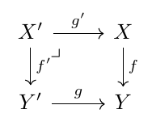
-
(P4)
任意の空間について は閉写像である．
-
(P5)
どんなについても base change は閉写像である．
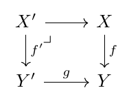
証明.
以下のように証明する．
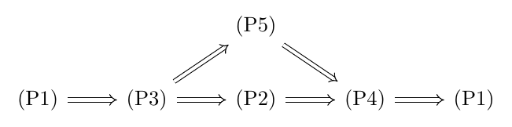 |
の証明:
まずファイバーがコンパクトであることを示そう． 以下の図式を考える． を任意にとる． そしてとする． 一番外側の図式は命題2の(A1) からpullbackとなり， 右側の図式は (P1)の仮定からpullbackである．
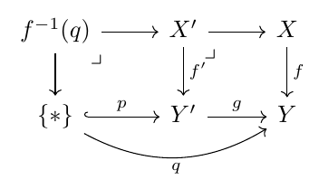 |
よって 定理 3 から右側の四角がpullbackになっている． このpullbackはのはずなので とが同相であることがわかる．よって のファイバーがコンパクトであることがわかる．
次に が閉写像であることを示す． 完全写像の話のここは ジェネトポパワーでなんとかする．
であることと が射影であることに注意しよう． をの閉集合とする． そして をとる． に注意しよう． このとき 任意の である．というのも，交わりを持った場合， に反するからである． ここでが完全であることから はコンパクトであるので，特に もコンパクトである． するとtube lemmaから 開集合 と が存在して かつ となる． さて が閉写像であることから， とおくとこれはの開集合で ある(この操作についてのより詳しい解説は[4]を参照のこと)． そしてとし， とする． 今からがの近傍でありと交わらないことを証明しよう．まず がの近傍であることを示そう． なのでである．よって そしてである． 故に なので である． これでがの近傍であることがわかった． 次に を示そう． についてかつ である． 故に であるから である． つまり である． つまり であり だからである． よってとが交わりを持たないことがわかった． そしての任意性から の補集合が開集合であることがわかったので， は閉集合である． すなわち は閉写像である．
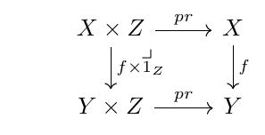 |
: 自明．
: 自明.
の証明: とすることでが閉写像であることがわかる． 次にがコンパクトであることを証明しよう． を任意の位相空間とする
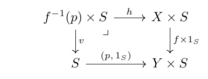 |
系 10.
を完全写像とする． このときの任意の部分集合について は完全写像である．
証明.
以下の図式を考える．ここで である．
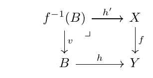 |
するとこの図式がpullbackであることから は完全写像である． ∎
補題 11.
と を完全写像とする． このとき も完全である．
証明.
系 12.
を完全写像とし， をのコンパクト集合とする． このとき はのコンパクト集合である．
証明.
定理 13 ([9, Theorem 1.1]).
を位相空間とし， をハウスドルフ空間とする． そしてを完全写像とし を連続写像とする． このとき は完全写像である．
定理 14 ([9, Corollary 1.4]).
を位相空間とし， はハウスドルフとする． そしては連続写像で は完全射像とする． もしも が完全写像ならばも完全写像である．
証明.
pullbackを使う証明が思いつかなかったので普通に証明する． とするとがハウスドルフであることから は完全写像となる(定理13)． をのグラフとする． このとき は同相写像である．特に完全である． で なのでが完全であることが従う． ∎
この文章で 完全正則空間といったら を仮定する方の意味である． またで位相空間の ストーンチェックコンパクト化を表すとする．
定理 15.
と を完全正則空間とし を連続写像とする． このとき以下は同値である．
-
(Q1)
は完全写像である．
-
(Q2)
あるコンパクト空間と閉埋め込みが存在して が成り立つ． ここでである．
-
(Q3)
以下の図式がpullback になる．ここでと は自然な埋め込みである．
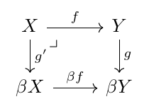
-
(Q4)
の任意のコンパクト化をと書くこのとき以下の図式がpullbackになる．
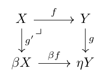
-
(Q5)
とはそれぞれと のコンパクト化であって尚且つ以下の図式を可換にするものとする．このとき以下の図式はpullbackになる．
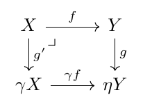
-
(Q6)
条件(Q3)と同じ状況で が成り立つ．
-
(Q7)
条件(Q4)と同じ状況下で が成り立つ．
-
(Q8)
条件(Q5)と同じ状況下で が成り立つ．
証明.
の証明： 以下の可換図式を考える．
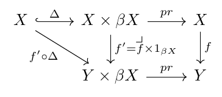 |
からに伸びる射は合成すると恒等写像になる． よってととれば (Q2)が満たされる．
の証明:
なので， を証明する．
以下の図式を考える． を作った後にを作る．
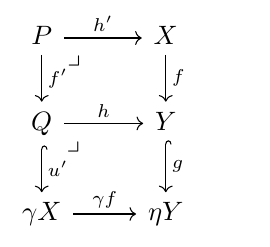 |
ここでが埋め込みであることから はと同相である． よって以下の図式を得る．
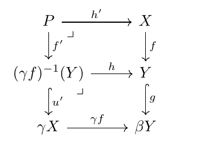 |
ここでは包含写像である．
自明な埋め込み があるので以下の図式が成り立つ．
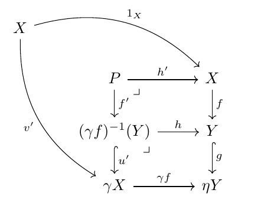 |
よっての普遍性からが一意的に存在する．
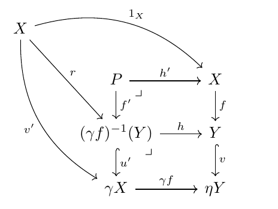 |
さらにの普遍性から が一意的に存在する．
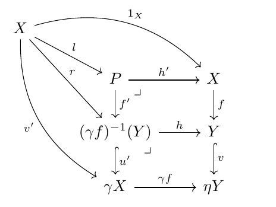 |
ここでで， とは完全写像なので， 定理 14から も完全写像になる． さらになので も完全写像である．
ところでなので 包含写像があるが， これはの図式のと入れ替えても可換図式を満たす．よっての一意性よりは 包含写像である． はの中で稠密なので特に の中でも稠密である． 今が完全写像で，特に閉写像であることがわかっているのではの中で閉集合ということになる． 稠密性からとなり，結局 は恒等写像であったことがわかる． さらに図式の可換性からがわかるので結局以下の図式がわかる．
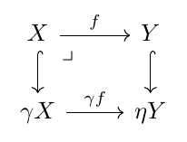 |
これは (Q5)が成り立つということである．
の証明: が成り立つので を証明すれば良い． 上述の の証明と似たようなもんだが，めんどくさがらず一応説明する．
がpullbackであることと
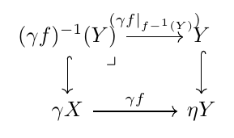 |
がpullbackであることから が従う．
の証明: やが完全写像であることと，系10 からが完全写像であることが従う．
以上で証明が終わる． ∎
3 おまけ
連続写像が 固有写像であるとはによるコンパクト集合の引き戻しがコンパクトになるときにいう．
空間が-空間であるとは の部分集合が閉集合であることと， 任意のコンパクト部分集合について がの閉集合であることが同値になるときにいう．つまり写像の族 による商位相と自体の位相が一致するということである． この空間のことをコンパクト生成であるともいう．
位相空間が弱ハウスドルフであるとは，任意のコンパクト部分集合が閉集合になるときにいう．
命題 16.
を位相空間とし， をコンパクト生成弱ハウスドルフ空間とする． このとき連続写像 が完全写像であることと固有写像であることは同値である．
証明.
まずが完全であると仮定する．このとき 系 12より は固有写像になる． 逆にが固有であると仮定しよう． このとき固有写像の定義からの各ファイバーは コンパクトになる．今からが閉写像になることを示そう． をの任意の閉集合とする． このときがの中で閉集合であると言えれば良い． の任意のコンパクト部分集合を とする．このとき が成り立つ(この式は射影公式と呼ばれ，集合間の写像とその部分集合についていつでも成り立つ)． ここでが固有であることからはコンパクト集合であり はの閉集合なので はの閉集合である． 特にコンパクトである． 故にもコンパクトである． つまりはのコンパクト部分集合である． よってが弱ハウスドルフであることから は閉集合である．の任意性と が-空間であることから は閉集合である． よってが閉写像，ひいては完全写像であることがわかった． ∎
注意.
次の定理は使うかもと思って準備したが使わなかった．
の図式のpullbackについても考えよう．
定理 17.
以下の可換図式において小さい正方形の図式の左上はpullbackになっているとする．このとき は一番大きい外側のpullbackにもなっている．
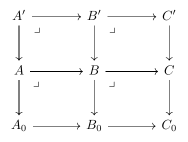 |
References
- [1] A private communication with yujitomo. 2024年7月14日．
- [2] はてなブログ電波通信, 「未完成(tube lemma)」, https://concious4410.hatenablog.com/entry/2015/12/04/204115
- [3] はてなブログ電波通信, 「コンパクト性と閉射影:Kuratowski–Mrówka’s Thoerem」, https://concious4410.hatenablog.com/entry/2016/06/23/151341
- [4] はてなブログ電波通信, 「閉写像云々とか固有写像とか」 https://concious4410.hatenablog.com/entry/2015/11/06/205115
- [5] Stack Project, 5.17 Characterizing proper maps, https://stacks.math.columbia.edu/tag/005M
- [6] M. Henriksen and J. R. Isbell, Some properties of compactifications, Duke Math. J. 25, 83–105 (1958), doi: 10.1215/S0012-7094-58-02509-2.
- [7] D. Holgate, The pullback closure, perfect morphisms and completions, (1995), PhD Thesis, University of Cape town, https://open.uct.ac.za/server/api/core/bitstreams/c3824df1-0075-4bb1-a4a2-9aecdb5a7f5f/content
- [8] J. Nagata, A note on M-space and topologically complete space, Proc. Japan Acad. 45 (1969), 541-543, doi: 10.3792/pja/1195520664.
- [9] E. Michael, A theorem on perfect maps, Proc. Am. Math. Soc., (1971) 28, 633–634, doi:10.2307/2038028.
- [10] J. van der Slot, Some properties related to compactness, Mathematical Center, Tracts 19, Amsterdam, 1966.